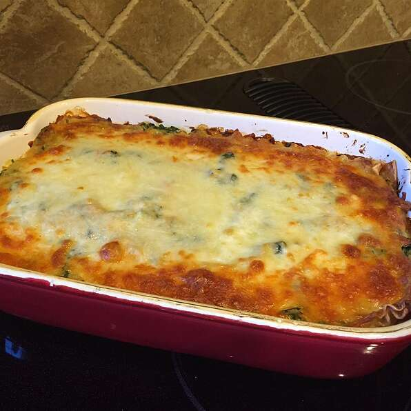

Lasagna

Description:
Lasagne (US: /ləˈzɑːnjə/, also UK: /ləˈzænjə/,[1] Italian: [laˈzaɲɲe]; singular lasagna, Italian: [laˈzaɲɲa]) are a type of pasta, possibly one of the oldest types,[2] made of very wide, flat sheets. Either term can also refer to an Italian dish made of stacked layers of lasagne alternating with fillings such as ragù (ground meats and tomato sauce), vegetables, cheeses (which may include ricotta, mozzarella, and parmesan), and seasonings and spices, like Italian seasoning, such as garlic, oregano and basil.[3] The dish may be topped with grated cheese, which becomes melted after baking. Typically cooked pasta is assembled with the other ingredients and then baked in an oven. The resulting casserole is cut into single-serving square portions.
Origins and History:
Lasagne originated in Italy during the Middle Ages. The oldest transcribed text about lasagne appears in 1282 in the Memoriali Bolognesi ("Bolognesi Memorials"), in which lasagne was mentioned in a poem transcribed by a Bolognese notary;[4][5] while the first recorded recipe was set down in the early 14th-century Liber de Coquina (The Book of Cookery).[6] It bore only a slight resemblance to the later traditional form of lasagne, featuring a fermented dough flattened into thin sheets (lasagne), boiled, sprinkled with cheese and spices, and then eaten with a small pointed stick.[7] Recipes written in the century following the Liber de Coquina recommended boiling the pasta in chicken broth and dressing it with cheese and chicken fat. In a recipe adapted for the Lenten fast, walnuts were recommended.
Ingredients:
- 9 lasagna noodles
- ¼ cup margarine
- ¼ cup all-purpose flour
- ½ teaspoon salt
- ¼ teaspoon ground black pepper
- 1 cup milk
- ½ cup vegetable broth, or as needed
- 2 tablespoons white wine
- ½ cup grated Parmesan cheese
- 1 cup light ricotta cheese
- 1 egg
- 1 egg white
- 1 tablespoon olive oil
- 2 cups coarsely shredded carrots
- 2 cups coarsely chopped zucchini
- 1 (10 ounce) package frozen chopped spinach, thawed and drained
- 1 cup shredded mozzarella cheese
Steps:
- Bring a large pot of lightly salted water to a boil. Cook lasagna in the boiling water, stirring occasionally until cooked through but firm to the bite, about 8 minutes. Drain.
- Preheat oven to 375 degrees F (190 degrees C).
- Melt margarine in a skillet over low heat; cook and stir flour, salt, and pepper into the melted margarine until smooth and bubbling, 2 to 3 minutes. Add milk and broth into flour mixture, stirring constantly; bring sauce to a boil. Stir wine into sauce and remove from heat. Stir Parmesan cheese into sauce until smooth.
- Whisk ricotta cheese, egg, and egg white together in a bowl.
- Heat olive oil in a skillet over medium-high heat; saute carrots, zucchini, and spinach until just becoming tender, 5 to 10 minutes. Stir vegetable mixture into ricotta mixture.
- Layer 1/3 the lasagna noodles, 1/3 the ricotta-vegetable mixture, and 1/3 the Parmesan sauce in a 9x13-inch baking dish; repeat layering 2 more times with remaining ingredients, ending with a layer of mozzarella cheese.
- Bake in the preheated oven until cheese is lightly browned and bubbling, about 30 minutes.
References:
- The Oxford English Dictionary. Oxford University Press.
- The Oxford Companion to Food 2nd Ed. Oxford University Press, USA. 2006. ISBN 0-19-280681-5.
- "Lasagna". Merriam-Webster. Retrieved 30 June 2017.
- Un mare magnum di possibilità: i Memoriali bolognesi e la loro schedatura (1265-1452)
- Rime dei memoriali bolognesi
- de Coquina (1285), De lasanis Archived 12 February 2015 at the Wayback Machine. Gloning.
- Serventi, Pasta: the story of a universal food, Columbia UP, 2012, p.235